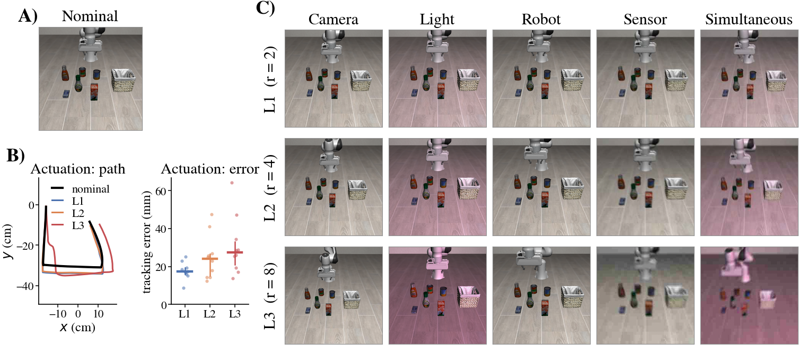
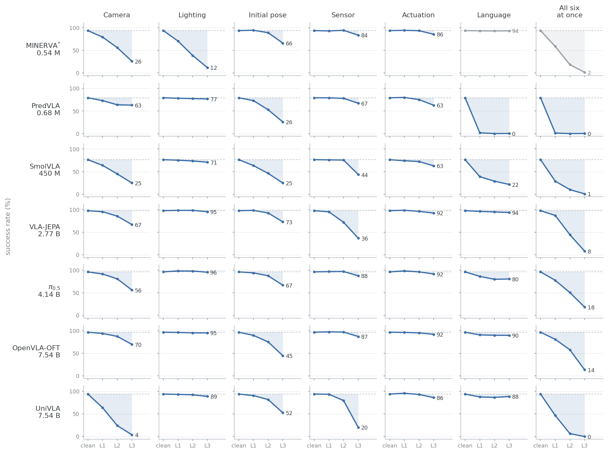

Vision-language-action policies are typically evaluated one perturbation at a time, providing a useful diagnosis of their sensitivity to individual distribution shifts. Real-world deployment, however, may involve several shifts simultaneously, and it remains unclear how these individual robustness measurements compose.
LIBERO-CTRL asks two questions. Does robustness to each perturbation alone predict robustness to all of them together? And what happens to individual initial states when the perturbations are combined? To answer them, every initial state is run under six single-axis conditions and one simultaneous condition, so outcomes can be compared state by state rather than only as success rates.


Two policies can have the same single-axis and simultaneous success rates and behave completely differently. For UniVLA at L1, Sconj = 50.5% and Ssim = 46.5% — four points apart, a difference not statistically distinguishable from zero — yet 66 of 400 initial states succeed under every single-axis condition and fail simultaneously (emergent failures), and 50 do the opposite (compensated successes). 29% of the initial states changed outcome; the aggregate hides it.
Counting both transitions across policies, the disagreement rate Re + Rc reaches 34.5% of matched pairs at L2 (VLA-JEPA; π0.5 33.5%): one matched pair in three changes outcome between the single-axis conditions and the simultaneous one.
The gap from the independence prediction Sindep (the product of the six single-axis rates) to Ssim splits into two steps: D = Sconj − Sindep, cross-axis dependence, positive for every policy at every level — failures cluster on the same initial states; and I = Ssim − Sconj = Rc − Re, the superposition effect, which turns negative as severity rises — the simultaneous condition removes successes that every single-axis condition had kept.
| LIBERO-Plus | LIBERO-PRO | LIBERO-CTRL | |
|---|---|---|---|
| severity | levels set after the fact, from how many of four reference policies solved each case | no graded severity | a controlled distance in parameter space, the same on every axis |
| compound perturbation | one combined condition, with its own rollouts | one perturbation at a time | six single-axis conditions and the simultaneous one, from the same initial state |
| reports | success rates | success rates | what happens to each initial state |
A success rate says how many initial states succeed. Only the pairing says which ones changed.
pip install -e . into the LIBERO environment you already have — nothing else is touched. No dataset, no download: the manifests ship with the repository.
class MyPolicy:
def reset(self, language, *, seed): ...
def act(self, agentview, wrist, obs): ...
libero-ctrl run --policy mymod:MyPolicy --level L1 --out out/
- bm = benchmark.get_benchmark_dict()["libero_spatial"]() + bm = get_benchmark_dict(split="eval")["libero_ctrl_spatial"]()
Your own harness: five hook calls. Details in the README.
bash setup/ctrl.sh install # once bash setup/lerobot.sh pi05 install # environment + checkpoint bash setup/small.sh pi05 # 1/20 of the design, ~1 h bash setup/lerobot.sh pi05 eval # the full design
make paper # every table and figure make verify # every number the paper states
@article{sawada2026libero_ctrl,
title = {Beyond Single-Axis Testing: Paired Evaluation of Compound Robustness
in Vision-Language-Action Policies},
author = {Sawada, Hiroki and Kasahara, Shunichi},
journal = {arXiv preprint arXiv:2609.15940},
year = {2026},
url = {https://arxiv.org/abs/2609.15940}
}